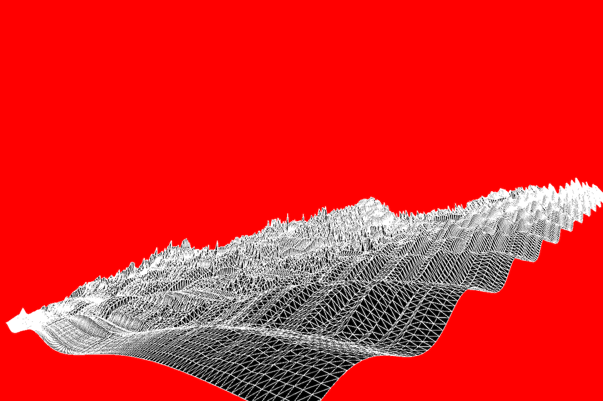
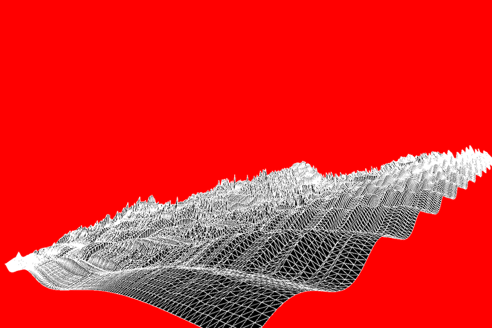
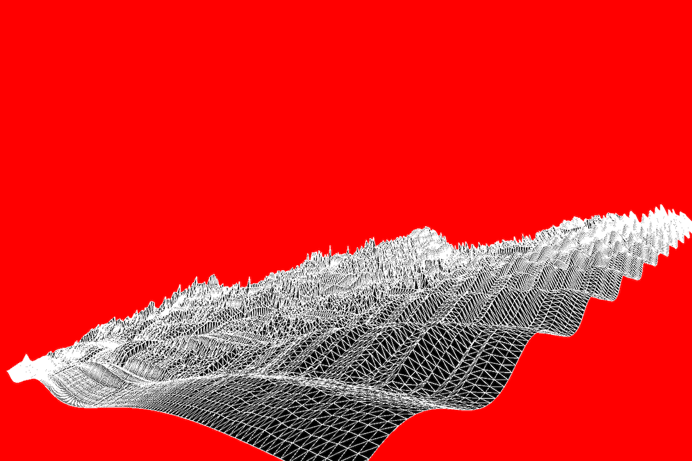

CURRENT PROJECT(S)
RESEARCH PROJECT (MINI THESIS)
RESEARCH_PROJECT_BRIEF
DATA_SCAPE_WORKSHOP
WORKSHOP_1_BRIEF
FEATURED OUTPUTS
 

PROJECTS ARCHIVE
*WORKSHOP_2_GITHUB_PAGES*
*WORKSHOP_1_DATA_SCAPES*
ABSTRACT METHODS 4 DESIGN
WHEN: TU / TH / 3:00-5:50pm
WHERE: STAFFORD 200
INSTRUCTOR:
AUBREY POHL
APOHL@CAAD.MSSTATE.EDU
Throughout this course, each student will conduct research, identify a data-driven narrative, collect data, implement and manipulate data, and through abstract methods of tool and material experimentation (primarily creative coding), produce a research output that communicates a narrative through the lens of data-informed (abstracted) design.
Data Abstraction: A method for utilizing data in the design process as a form manipulator that focuses on the emotional value of data in visual storytelling.
• Workshops
• Research Project
Competitions, open calls, etc.
RESEARCH PROJECT (MINI THESIS)
DATA_SCAPE_WORKSHOP
